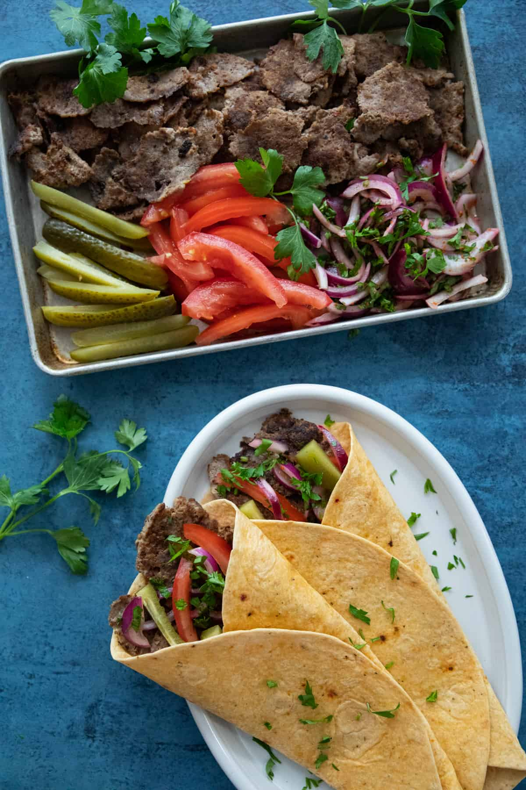

Doner Kebab

Description
A European street-food staple, Doner Kebabs are sure to satisfy that any time
of day or night craving. They are known as a cheap but filling snack and are
often sold by local vendors catering to the late-night after bar crowd.
The seasoned meat (traditionally turkey, but often lamb) is roasted slowly on a rotating
skewer, and shaved off in thin pieces with an electric knife. It's then served in a warm
pita or tortilla, with fresh veges and a white cream sauce. Most places will also offer a
a signature spicy red sauce.
Ingredients
- 2 Lbs chicken thighs
- olive oil
Marinade
- 1 cup plain yogurt
- 3 cloves garlic minced
- 1 1/2 tsp coriander powder
- 2 tsp paprika
- 1 tsp cayenne pepper
- 1 1/2 tsp onion powder
- 1/2 tsp black pepper
- 2 1/2 tbs of tomato paste
- 1 1/2 tsp salt
- 1 tbsp lemon juice
- 2 tbsp olive oil
For Serving
- pita bread
- finely sliced iceberg lettuce
- Tomato slices
- Hummus
- Red onion slices
- Grated Cheese
- Chilli Sauce
Steps
- Mix marinade in a large bowl. Add chicken and mix to coat well.
- Cover and marinate in fridge for 24 hrs.
- Pre-heat oven to 450F.
- Line baking pan with foil.
- Thread chicken onto skewers, pushing snugly against each other.
- Prop skewers on edge of baking pan and bake for 35 minutes.
- Spoon pan juices onto chicken, flip, drizzle with oil and bake for
20 more minutes.
- Baste again with pan juices and let stand for 5 minutes.
- Assemble kebabs and enjoy!